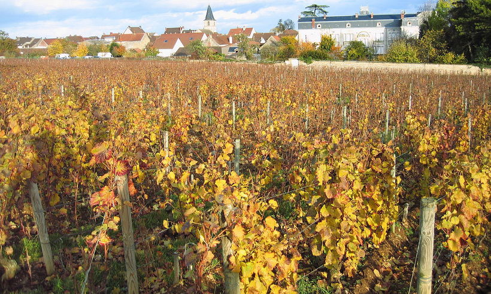
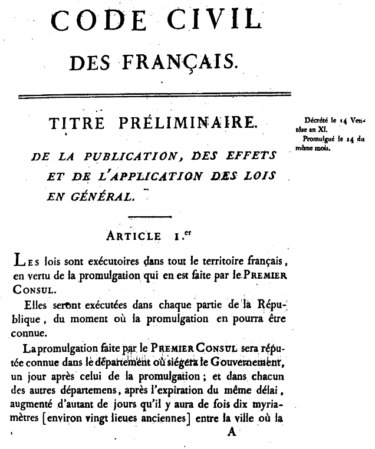
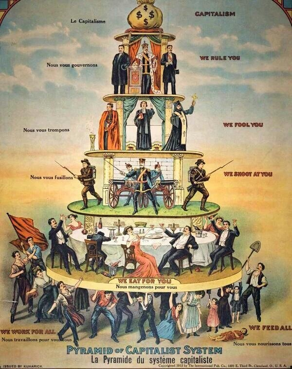

상속세가 산업을 붕괴시키는가 ? - 프랑스 샤또의 사례
게시: 2018-01-29T23:39:24+09:00
요즘 네이버 뉴스 댓글을 보면 진보파와 보수파가 전쟁을 벌이는 것이 눈에 확연하게 보입니다. 제가 보니 보수파의 댓글 부대도 이젠 MB나 503은 완전히 포기한 것 같고, 그냥 현 진보파 정부를 공격하는 것에 총력을 기울이는 것으로 보입니다. 그러는 와중에 진보 댓글파를 비롯하여 대부분의 독자들은 주목하지 않는데도 보수 댓글파가 매우 격렬하게 반응하며 댓글과 좋아요를 눌러대는 기사가 있는 것을 보았습니다. 바로 상속증여세에 대한 것이었습니다.
이건 매우 흥미로운 현상이었습니다. 다들 아시다시피 대부분의 국민 가정에서는 상속세를 낼 일이 없습니다. 과표기준으로 5억원까지는 면세고, 해당이 된다고 하더라도 얼마 내지도 않거든요. 그렇기 때문에 상속증여세가 뼈아프게 다가올 계급은 수십억대의 재산을 가진 집안 뿐인데, 그런 집안 사람들이 그렇게 많은지 몰랐습니다. 메인에 오르지도 않아 별로 눈에 띄지도 않는 그런 네이버 기사를 용케 찾아내어 "상속증여세를 폐지하라"며 순식간에 수백 개의 격렬한 댓글과 추천을 눌러대는 모습은 무척 신기한 일이었습니다. 저야 알아낼 방법이 없지만, 뭔가 배경이 있다고 생각되었습니다.
상속증여세에 대해서는 찬반이 엇갈리고, 또 스웨덴 등에서는 아예 폐지되기도 하는 등 많은 역사와 사례가 있습니다. 보수파에서 상속증여세를 크게 줄이거나 아예 폐지해야 한다고 주장하는 이유에는 몇 가지가 있는데, 대표적인 것을 몇 개만 나열하면 아래와 같습니다.
1. 이미 소득세를 낸 재산에 대해 소유주가 죽었다고 해서 다시 과세하는 것은 이중과세다.
2. 상속세가 없는 나라도 있으니 우리나라만 상속세를 높게 유지한다면 부자들이 재산을 외국으로 빼돌리게 된다.
3. 상속세를 내느라 기업을 팔아야 하므로, 서민들의 일자리에도 좋지 않다.
보수파가 주장하는 상속세를 폐지해야 하는 이유 1번은 말도 안되는 주장입니다. 모든 소득에는 과세가 있는 것이 정상입니다. 자식이 부모의 재산을 물려받는 것은 소득의 하나의 형태이므로 세금을 내는 것이 당연합니다. 과거 그 재산을 모으며 세금을 냈던 것은 그 부모일 뿐, 상속에 의한 수익자인 자식이 아닙니다. 2번 이유는 사실 가볍게 여길 문제는 아닙니다. 물론 우리나라 부자들의 재산 중 상당 부분이 부동산이므로 외국으로 쉽게 빼돌릴 수가 없긴 합니다만, 이건 국제적인 공조가 없는 이상 뾰족한 방법이 없습니다.
가장 크고 또 국민들에게 직접적인 영향을 주는 문제는 3번 항목입니다. 실제로 우리나라에서도 이를 일부 인정하여, 중소기업이 고용을 유지하는 경우 상속세를 일부 경감해주기도 하는 것으로 알고 있습니다. 이 문제에 대해서 다른 선진국의 사정은 어떨까요 ? 여러가지 사례가 있겠습니다만 최근에 읽은 프랑스의 전통 포도원의 경우를 소개해드리겠습니다.
보통 샤또(chateau, 성)라고 부르는 프랑스의 포도원에서는 와인을 생산하지요. 내재가치의 상승 때문인지 그냥 통화량의 증가 때문인지 모르겠으나, 최근 20년 사이 세계적인 부동산 가격 폭등에 따라 샤또들의 가격도 껑충 뛰었습니다. 가령 20년 전, 랄루(Lalou Bize-Leroy)가 부르군디(Burgundy) 지방의 로마네 생 비방(Romanée-Saint-Vivant)에 0.5 헥타르 넓이의 땅을 샀을 때 그 매입가는 10억원 정도였습니다. 이미 그때 주변 샤또에서는 '저렇게 높은 가격으로 포도밭을 사다니 미쳤다'라며 비웃었다고 합니다. 그러나 그 땅의 현재 가격은 200억원에 달합니다. 이렇게 땅값은 뛰는데 정작 거기서 나오는 노동의 산물인 와인 판매액은 고만고만한 상황이었지요.

(로마네 생 비방의 포도밭입니다. 출처는 위키피디아...)
그런데 그런 가격 상승이 샤또 소유 가족에게 꼭 좋은 일만은 아닌 것으로 드러났습니다. 토지 가격이 뜀에 따라, 당연히 상속세까지 뛴 것입니다. 프랑스에서는 상속 대상이 토지인 경우, 대략 우리 돈으로 1억원 초과분에 대해서는 세계 최고 수준인 45%의 상속세를 내야 하거든요. 결과적으로, 원래 가족 단위로 운영되던 이런 샤또는 그 소유주가 사망할 경우 큰 곤경에 처하게 되었습니다. 땅값이 뛰기 전에는 괜찮았습니다. 제2차 세계대전 전에는 그 샤또의 소유주가 사망하더라도, 그 자식들은 한 해 수확물을 판 돈으로 상속세를 충분히 낼 수 있었습니다. 그러나 요즘엔 상속세를 내려면 보통 그 샤또의 10년치 이상의 매출액이 필요하답니다. 결국, 상속세를 내려면 샤또를 팔아버리는 수 밖에 없게 된 것입니다.
그러나 이렇게 샤또들이 외부인들에게 매각되는 것이 꼭 상속세 때문만은 아닙니다. 1804년 만들어진 나폴레옹 법전은 여전히 프랑스 뿐만 아니라 전세계의 법률에 지대한 영향을 끼치는데, 그 핵심 사상 중 하나가 평등이었습니다. 즉, 세습 귀족 신분이나 특권이 소멸됨과 동시에, 성경에도 나오는 유구한 전통을 가진 장자상속제(primogeniture)까지도 없앤 것입니다. 그래서 샤또의 가장이 사망할 경우, 모든 아들들(딸이 자신의 권리를 찾는 것은 20세기 중반까지 기다려야...)이 동일한 분량의 땅을 나눠 가져야 했습니다. 결국 샤또를 운영할 의지를 가진 아들이 다른 형제들의 몫을 빚을 내서 사들이든가, 아니면 동업의 형태로 운영을 해야 했습니다. 거기에다 거액의 상속세까지 얻어맞으니 많은 샤또들이 거대 부동산 회사나 외국인 투자자들에게 매각될 수 밖에 없었습니다.

(1804년 초판본 '프랑스 민법전' Code Civil des Francais입니다. 물론 나폴레옹 혼자서 만든 것이 아니라, 그 이전 국민공회 때부터 꾸준히 초안을 만들고 수정했던 것이며, 나폴레옹도 처음부터 '나폴레옹 법전'이라는 이름을 붙이지는 않았습니다. 나폴레옹 법전이라는 말이 굳어진 것은 훗날 그의 조카인 나폴레옹 3세 때의 일입니다.)
많은 프랑스 와인 애호가들이 이런 상황을 우려하며 샤또에 대한 상속세 완화 등을 주장했습니다. 그러나 과연 상속세가 프랑스의 와인 산업을 붕괴시키고 있을까요 ? 꼭 그렇지는 않습니다. 샤또가 외국인들에게 팔리는 것은 그냥 소유권이 이전되는 것일 뿐 포도나무에 포도가 안 열리는 것도 아니요 토질이 악화되는 것도 아니니까요. 가령 작은 샤또인 제브레이-샹베르탱(Gevrey-Chambertin)은 2012년 중국 투자자에게 매각되었습니다. 당시 프랑스 비평가들은 이제 저 샤또는 끝났다라고 생각했으나, 전혀 그렇지 않았습니다. 새 중국인 주인인 루이 응(Louis Ng)씨는 비싼 값에 사들인 샤또를 기존 주인 못지 않은 정성으로 기존 전통을 지켜가며 예전보다 더 알뜰살뜰 가꾸며 발전시키고 있습니다. 결국 샤또에서 나오는 와인의 품질은 어떤 혈통을 가진 사람이 그 소유권을 가지고 있느냐가 아니라, 그 주인이 얼마나 열심히 일을 하느냐에 달려 있는 것이라는 당연한 사실이 다시 한번 드러난 것입니다. 이렇게 작은 가족 사업인 샤또의 사정도 이런데 대기업 지분 상속의 경우는 소유주가 누구이냐는 사실 더 중요하지 않습니다. 그 기업 안에서 일하는 사람들이 더 중요한 것이지요.
(제브레이-샹베르텡 와인입니다. 물론 기사 속의 루이 응씨의 샤또에서 나온 것은 아니겠지요. 샹베르텡은 나폴레옹이 가장 좋아하던 와인이었습니다.)
물론 이렇게 프랑스의 샤또들이 상속세 때문에 외국 투자자들 손으로 넘어가는 것에 대해 여전히 불안과 불만의 목소리는 있습니다. 가령 와인 가격이 부당하게 올라갈 것이라는 우려가 그 대표적인 것입니다. 엄청난 가격을 치르고 샤또를 손에 넣었으니, 본전을 뽑기 위해서라도 그 생산물인 와인 가격은 결국 오르게 될 것이라는 주장이지요. 그러나 사실 그건 상속세 때문이 아닙니다. 부동산 가격이 비정상적으로 오른 것이 진짜 원인이지요. 만약 정말 프랑스 와인이 프랑스 농장주에 의해 운영되면서 적절한 가격에 공급되는 것이 지상 목표라면, 경작권을 그 가족이 가지는 조건으로 그 토지 소유권 지분을 상속세 대신 국가에 헌납하면 됩니다. 당연히 그건 싫겠지요. 그러니까 '프랑스 와인 산업을 보호하기 위해서는 상속세율을 대폭 내려야 한다'라는 이야기는 그냥 '상속세 내기 싫다'라는 속내의 핑계에 불과한 것입니다.
세금을 내기 싫은 것은 인간이라면 누구나 다 가지는 생각입니다. 그건 충분히 이해가 가는 일입니다. 그러나 군대 가기 싫고 아침에 일찍 일어나기 싫은 것도 인간의 속성입니다. 가기 싫다고 군대에 가지 않고 직장에 정시 출근하지 않으면 세상이 어떻게 되겠습니까 ? 돈 많은 가문에서 댓글 부대든 학자들이든 온갖 것을 동원하여 상속세를 폐지/약화시키려고 노력하는 것은 결국 그 가문에는 당장 좋은 일이 될지는 몰라도, 결국 그 사회를 불안정하게 만듦으로써 장기적으로는 소탐대실이 될 것이라고 생각합니다. 갑자기 웬 사회 불안정이냐고요 ?

저는 상속증여세는 단순히 복지 증대를 위한 세수 확보 차원에서가 아니라, 사회 안정성을 위해서도 반드시 필요하다고 봅니다. 근대 이전까지의 유럽 사회의 발전이 느렸던 것이나 우리나라가 구한말까지 후진성을 면치 못했던 이유 중 가장 중요한 것이 바로 세습 신분제에 의한 사회 경직성입니다. 모든 사람이 자신의 능력에 따라 대우를 받아야 사회가 발전하는 것은 당연한 일입니다. 그러나 신분제 사회에서는 가난한 평민 청년은 똑똑하고 정직하더라도 비천한 일을 맡게 되고, 귀족 집안에서 태어난 도련님은 무능하고 추악한 성격을 가졌더라도 막대한 권한이 갖기 마련입니다. 그런 사회에 밝은 미래는 없습니다. 그런데 현대는 역사상 그 어느때보다도 자본과 기업의 힘이 강력한 시대입니다. 즉, 자본과 기업 경영권은 과거의 국가 권력에 맞먹는 중요성을 가집니다. 그런 상황에서 아버지의 재산이 자식에게 아무 세금 없이 그대로 넘어간다면, 결국 그 사회는 돈에 기반한 새로운 세습 신분제 사회가 될 수 밖에 없습니다.
그게 뭐가 문제냐고요 ? 한진해운이 망한 것은 결코 최저임금이나 노동조합 때문이 아니었습니다. 세습 경영권을 물려받은 무능한 족벌 경영진 때문이었습니다. 그리고 세습 경영권 제도에서는 그 땅콩공주님 같은 분이 기업 경영권을 가지게 됩니다. 그런 세습 신분에 의존하는 족벌 경영이 우리나라 자본주의의 발전에 도움이 된다고는 생각하지 않습니다.
워렌 버핏이나 스티브 잡스, 빌 게이츠 같은 사람들이 큰 재산을 모으고 엄청난 금권력을 쥐는 것은 자본주의이고, 사회와 경제를 발전시키는 원동력입니다. 그러나 그 아들딸들이 아무 노력과 업적 없이 큰 재산과 그에 따른 금권력까지 물려받는 것은 자본주의가 아니라 사회를 퇴보시키는 카스트 제도일 뿐입니다. 적절한 상속증여세는 건전한 사회 발전을 위해 꼭 필요합니다.
Source :
http://blog.vinfolio.com/2016/06/03/france-inheritance-is-privilege-wine-inheritance-tax-means-estates/
https://www.britannica.com/topic/Napoleonic-Code
https://en.wikipedia.org/wiki/Gevrey-Chambertin_wine